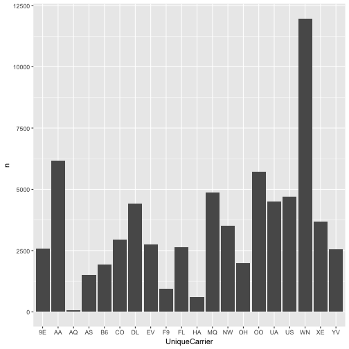
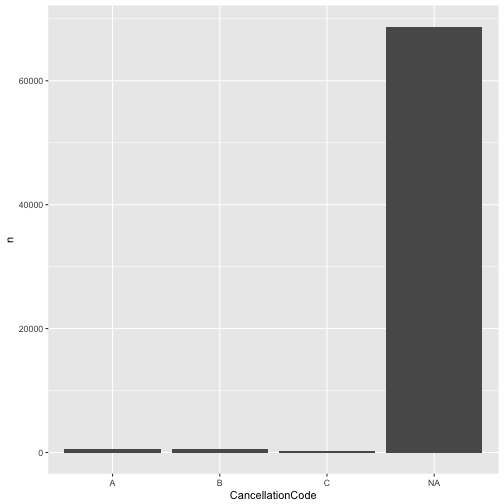
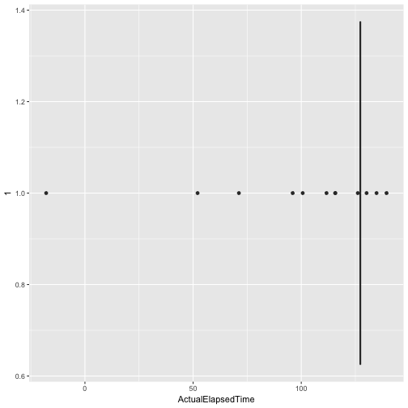
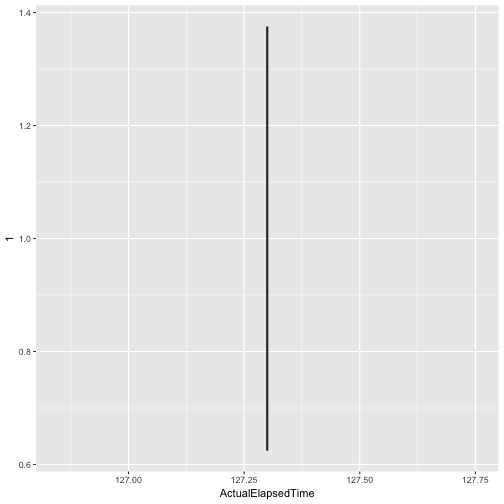

xwMOOC 기계학습
이상점(Outlier) 검출
핵심 개념
- 이상점 탐지 방법론에 대해 개괄적으로 살펴본다.
- 연속형, 범주형 자료형에 따른 이상점 탐지를 실습한다.
- 단변량, 이변량 상장그림을 통해 이상점을 식별한다.
1. 이상점 탐지 방법론 1
- 모형기반 (Model-based)
- 통계검증 (Statistical Tests)
- 깊이 기반 접근법(Depth-based Approaches)
- 편차 기반 접근법(Deviation-based Approaches)
- 근접기반 (Proximity-based)
- 거리 기반(Distance-based Approaches)
- 밀도 기반(Density-based Approaches)
- 고차원 접근법 (High dimensional Approaches)
2. 이상점 추출 및 처리 연습문제 2
# 1. 환경설정-------------------------------------------
#library(rapportools)
#library(outliers)
# 2. 데이터 가져오기-------------------------------------------
#library(nycflights13)
flights <- read_csv("~/Dropbox/02_data_family/01-outlier/data/flights_1_pcnt.csv")Parsed with column specification:
cols(
.default = col_integer(),
DepTime = col_time(format = ""),
CRSDepTime = col_time(format = ""),
ArrTime = col_time(format = ""),
CRSArrTime = col_time(format = ""),
UniqueCarrier = col_character(),
TailNum = col_character(),
ActualElapsedTime = col_double(),
AirTime = col_double(),
ArrDelay = col_double(),
DepDelay = col_double(),
Origin = col_character(),
Dest = col_character(),
TaxiIn = col_double(),
TaxiOut = col_double(),
CancellationCode = col_character()
)
See spec(...) for full column specifications.
- 연습문제 : 분석할 데이터(
flights)에 대한 자료구조와 요약통계량을 확인한다.
glimpse(flights)Observations: 70,097
Variables: 29
$ Year <int> 2008, 2008, 2008, 2008, 2008, 2008, 2008, 20...
$ Month <int> 4, 8, 2, 6, 9, 2, 2, 8, 12, 10, 7, 2, 5, 5, ...
$ DayofMonth <int> 12, 26, 8, 12, 1, 8, 13, 4, 16, 8, 5, 22, 14...
$ DayOfWeek <int> 6, 2, 5, 4, 1, 5, 3, 1, 2, 3, 6, 5, 3, 5, 5,...
$ DepTime <time> 78780 secs, 78780 secs, 78780 secs, 78780 s...
$ CRSDepTime <time> NA secs, NA secs, NA secs, NA secs, NA secs...
$ ArrTime <time> 57659 secs, 57659 secs, 57659 secs, 57659 s...
$ CRSArrTime <time> 69600 secs, 69600 secs, 69600 secs, 69600 s...
$ UniqueCarrier <chr> "AA", "OO", "YV", "AA", "B6", "US", "FL", "B...
$ FlightNum <int> 343, 3622, 7221, 2395, 133, 1264, 372, 295, ...
$ TailNum <chr> "N497AA", "N232SW", "N570ML", "N547AA", "N62...
$ ActualElapsedTime <dbl> 107, 81, 84, 162, 170, 163, 132, 163, 137, 6...
$ CRSElapsedTime <int> 100, 84, 89, 160, 187, 170, 136, 165, 143, 7...
$ AirTime <dbl> 84, 64, 65, 129, 145, 132, 95, 144, 116, 56,...
$ ArrDelay <dbl> 10, -5, -7, 0, -23, 0, 52, -1, -11, -2, -17,...
$ DepDelay <dbl> 3, -2, -2, -2, -6, 7, 56, 1, -5, -1, -4, -7,...
$ Origin <chr> "DFW", "SLC", "IAD", "CLT", "JFK", "MIA", "A...
$ Dest <chr> "ELP", "SGU", "GSP", "DFW", "RSW", "PHL", "L...
$ Distance <int> 551, 269, 383, 936, 1074, 1013, 761, 965, 75...
$ TaxiIn <dbl> 3, 6, 3, 19, 6, 4, 12, 5, 4, 5, 6, 7, 6, 3, ...
$ TaxiOut <dbl> 20, 11, 16, 14, 19, 27, 25, 14, 17, 8, 8, 9,...
$ Cancelled <int> 0, 0, 0, 0, 0, 0, 0, 0, 0, 0, 0, 0, 0, 0, 0,...
$ CancellationCode <chr> NA, NA, NA, NA, NA, NA, NA, NA, NA, NA, NA, ...
$ Diverted <int> 0, 0, 0, 0, 0, 0, 0, 0, 0, 0, 0, 0, 0, 0, 0,...
$ CarrierDelay <int> NA, NA, NA, NA, NA, NA, 0, NA, NA, NA, NA, N...
$ WeatherDelay <int> NA, NA, NA, NA, NA, NA, 0, NA, NA, NA, NA, N...
$ NASDelay <int> NA, NA, NA, NA, NA, NA, 52, NA, NA, NA, NA, ...
$ SecurityDelay <int> NA, NA, NA, NA, NA, NA, 0, NA, NA, NA, NA, N...
$ LateAircraftDelay <int> NA, NA, NA, NA, NA, NA, 0, NA, NA, NA, NA, N...
summary(flights) Year Month DayofMonth DayOfWeek
Min. :2008 Min. : 1.000 Min. : 1.00 Min. :1.000
1st Qu.:2008 1st Qu.: 3.000 1st Qu.: 8.00 1st Qu.:2.000
Median :2008 Median : 6.000 Median :16.00 Median :4.000
Mean :2008 Mean : 6.389 Mean :15.73 Mean :3.921
3rd Qu.:2008 3rd Qu.: 9.000 3rd Qu.:23.00 3rd Qu.:6.000
Max. :2008 Max. :12.000 Max. :31.00 Max. :7.000
DepTime CRSDepTime ArrTime CRSArrTime
Length:70097 Length:70097 Length:70097 Length:70097
Class1:hms Class1:hms Class1:hms Class1:hms
Class2:difftime Class2:difftime Class2:difftime Class2:difftime
Mode :numeric Mode :numeric Mode :numeric Mode :numeric
UniqueCarrier FlightNum TailNum ActualElapsedTime
Length:70097 Min. : 1 Length:70097 Min. :-113.4
Class :character 1st Qu.: 621 Class :character 1st Qu.: 77.0
Mode :character Median :1564 Mode :character Median : 111.0
Mean :2218 Mean : 127.5
3rd Qu.:3501 3rd Qu.: 156.0
Max. :7829 Max. : 669.0
CRSElapsedTime AirTime ArrDelay DepDelay
Min. : 15.0 Min. : 2.0 Min. : -62.000 Min. : -38.000
1st Qu.: 80.0 1st Qu.: 56.0 1st Qu.: -10.000 1st Qu.: -4.000
Median :110.0 Median : 87.0 Median : -2.000 Median : -1.000
Mean :129.1 Mean :104.3 Mean : 7.967 Mean : 9.771
3rd Qu.:160.0 3rd Qu.:131.0 3rd Qu.: 11.000 3rd Qu.: 9.000
Max. :660.0 Max. :642.0 Max. :1114.000 Max. :1114.000
Origin Dest Distance TaxiIn
Length:70097 Length:70097 Min. : 31.0 Min. :-30.623
Class :character Class :character 1st Qu.: 324.0 1st Qu.: 4.000
Mode :character Mode :character Median : 580.0 Median : 6.000
Mean : 728.4 Mean : 6.856
3rd Qu.: 957.0 3rd Qu.: 8.000
Max. :4962.0 Max. :120.000
TaxiOut Cancelled CancellationCode Diverted
Min. :-98.23 Min. :0.00000 Length:70097 Min. :0.000000
1st Qu.: 10.00 1st Qu.:0.00000 Class :character 1st Qu.:0.000000
Median : 14.00 Median :0.00000 Mode :character Median :0.000000
Mean : 16.41 Mean :0.01962 Mean :0.002539
3rd Qu.: 19.00 3rd Qu.:0.00000 3rd Qu.:0.000000
Max. :274.00 Max. :1.00000 Max. :1.000000
CarrierDelay WeatherDelay NASDelay SecurityDelay
Min. : 0.00 Min. : 0.00 Min. : 0.00 Min. :0e+00
1st Qu.: 0.00 1st Qu.: 0.00 1st Qu.: 0.00 1st Qu.:0e+00
Median : 0.00 Median : 0.00 Median : 6.00 Median :0e+00
Mean : 15.71 Mean : 2.95 Mean : 17.16 Mean :6e-02
3rd Qu.: 16.00 3rd Qu.: 0.00 3rd Qu.: 21.00 3rd Qu.:0e+00
Max. :1001.00 Max. :915.00 Max. :599.00 Max. :1e+02
NA's :54983 NA's :54983 NA's :54983 NA's :54983
LateAircraftDelay
Min. : 0.00
1st Qu.: 0.00
Median : 0.00
Mean : 20.68
3rd Qu.: 26.00
Max. :429.00
NA's :54983
- 연습문제 : 범주형 변수의 경우 이상점은 10% 보다 빈도가 적은 경우 해당된다.
flights$UniqueCarrier,flights$CancellationCode변수에 대한 막대그래프를 도식화한다.
# UniqueCarrier
carrier_tbl <- flights %>% count(UniqueCarrier)
ggplot(carrier_tbl, aes(x=UniqueCarrier, y=n)) +
geom_bar(stat="identity")
# CancellationCode
cancel_tbl <- flights %>% count(CancellationCode)
ggplot(cancel_tbl, aes(x=CancellationCode, y=n)) +
geom_bar(stat="identity")
- 연습문제 : 2번 연습문제에서 맞닥드린 이상점을 제거하라.
subset혹은filter함수를 사용한다.
flights <- flights %>%
dplyr::filter(UniqueCarrier != 'AQ')
flights <- flights %>%
dplyr::filter(CancellationCode != 'D')- 연습문제 : 숫자형 변수의 경우 이상점을 탐지하는데 권장되는 방식은
boxplot을 활용하는 것이다.flights$ActualElapsedTime변수에 대해서 상자그림을 도식화하시오.
ggplot(flights, aes(ActualElapsedTime, x=1)) +
geom_boxplot() + coord_flip()
- 연습문제 :
boxplot()함수를 사용한 경우boxplot.stats을 사용해서flights$ActualElapsedTime변수 이상점을 제거한다.
flights <- flights %>%
dplyr::filter(!(ActualElapsedTime %in% boxplot.stats(flights$ActualElapsedTime)$out))
ggplot(flights, aes(ActualElapsedTime, x=1)) +
geom_boxplot() + coord_flip()
- 연습문제 :
subset혹은filter함수를 사용해서TaxiIn변수가 0보다 크고 120보다 적은 범위를 벗어난 이상점을 제거하시오.
flights_exp <- flights %>%
dplyr::filter(TaxiIn > 0 & TaxiIn < 120)- 연습문제 :
subset혹은filter함수를 사용해서TaxiOut변수가 0보다 크고 50보다 적은 범위를 벗어난 이상점을 제거하시오.
flights <- flights %>%
dplyr::filter(TaxiOut > 0 & TaxiIn < 50)- 연습문제 :
flights_exp$ArrDelay변수에ifelse함수를 사용해서 이상점으로 판정되면NA값을 대입하시오.
summary(flights$ArrDelay) Min. 1st Qu. Median Mean 3rd Qu. Max.
8.179 8.179 8.179 8.179 8.179 8.179
flights <- flights %>% mutate(ArrDelay = ifelse(ArrDelay == outlier(ArrDelay), NA, ArrDelay))
summary(flights$ArrDelay) Mode NA's
logical 1363
- 연습문제 :
flights_exp$Distance변수에서 이상점을 제거하는데Lund Test통계적 방법을rp.outlier함수를 사용해서 실행하시오. 이번에는rapportools팩키지를 사용한다.
dim(flights)[1] 1363 29
flights <- flights %>%
dplyr::filter(!(Distance %in% rp.outlier(Distance)))
dim(flights)[1] 1348 29
- 연습문제 :
flights$CRSElapsedTime변수에 대해 2% 극단치를 찾아내는데 카이제곱 방법,scores를 사용하시오.
outliers <- outliers::scores(flights$CRSElapsedTime, type="chisq", prob=0.98)
table(outliers)outliers
FALSE TRUE
1303 45
3. 상자그림 이상점 검출
3.1. 단변량 이상점 검출 3
상자그림(boxplot)을 통해 분포를 시각화하거나 서로 다른 집단간 분포를 쉽게 시각화하여 비교가 가능하다. 특히, 이상점을 한눈에 볼 수 있게 ggplot을 활용하여 시각화하는 방법은 다음과 같다.
is_outlier함수를 통해 상자수염그림에서 이상점을 별도 점으로 표시하는 로직을 작성한다.mtcars데이터는 rownames를 갖는 데이터프레임이라 모델명을 별도 변수로 저장한다.- 이상점 표식에 사용될 라벨로 사용됨
is_outlier함수를 통해 이상점을 식별하여qsec_outlier변수에 저장한다.- ggplot의
geom_text함수에ifelse문을 적용하여 이상점만 표식한다.
# library(ggplot2)
data(mtcars)
is_outlier <- function(x) {
return(x < quantile(x, 0.25) - 1.5 * IQR(x) | x > quantile(x, 0.75) + 1.5 * IQR(x))
}
mtcars$model_name <- rownames(mtcars)
mtcars <- mtcars %>%
mutate(qsec_outlier = is_outlier(qsec))
ggplot(mtcars, aes(qsec, x=1)) +
geom_boxplot(outlier.colour = "red", outlier.size = 3) +
geom_text(aes(label=ifelse(qsec_outlier, model_name, "")), na.rm=TRUE, hjust=-0.3)
3.2. 이변량 이상점 검출 4 5
상자그림은 단변량 분포를 시각화하고 이상점을 추출할 때 적합하지만, 이변량인 경우 bagplot()을 통해 분포를 시각화하고 이상점을 추출하는 것이 가능해졌다.
깊이 중위수(depth median)이 중심이 되며, \(\frac{n}{2}\)의 데이터가 가운데 “가방(bag)”에 몰려있고, 가방을 3배 확장하여 펜스(fence)를 두르고 그 밖에 위치한 점은 이상점으로 별도로 표시한다.
# library(ggplot2)
# library(aplpack)
data(mtcars)
mtcars$model_name <- rownames(mtcars)
with(mtcars,
bagplot(qsec, mpg, xlab="qsec", ylab="mpg", show.outlier= TRUE,
show.looppoints=TRUE,
show.bagpoints=TRUE,dkmethod=2,
show.whiskers=TRUE,show.loophull=TRUE,
show.baghull=TRUE,verbose=FALSE))
# 이상점 표기
mtcars_bagplot <- with(mtcars, bagplot(qsec, mpg, xlab="qsec", ylab="mpg"))
mtcars_outlier <- as.data.frame(mtcars_bagplot$pxy.outlier)
names(mtcars_outlier) <- c("qsec", "mpg")
mtcars_outliers <- left_join(mtcars_outlier, mtcars)Joining, by = c("qsec", "mpg")
text(mtcars_outliers$qsec, mtcars_outliers$mpg, labels=mtcars_outliers$model_name, pos=1)